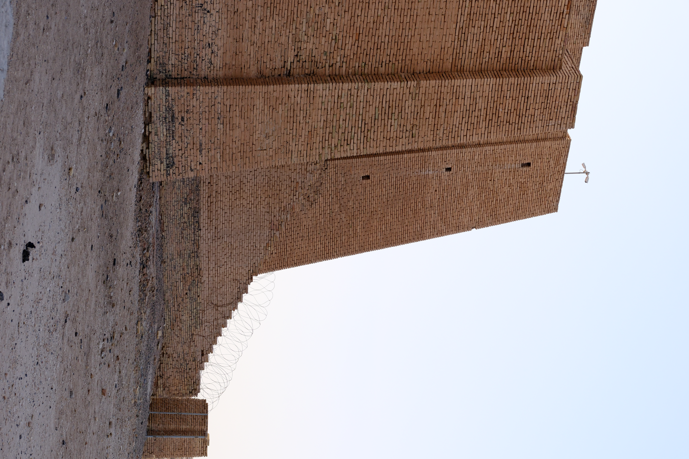

Ur (Ur of the Chaldees)

- Find Name
- Ur (Ur of the Chaldees)
- Description
- A great Sumerian city-state on the Euphrates in southern Mesopotamia, excavated by Sir Leonard Woolley from 1922 to 1934. Its remains include the massive staged ziggurat dedicated to the moon-god Nanna (Sin), a walled sacred precinct, residential quarters with narrow winding streets, and the Royal Cemetery, whose sixteen elaborate tombs yielded gold headdresses, lyres, jewellery of lapis lazuli and carnelian, and the Standard of Ur. At its height under the Third Dynasty of Ur (c. 2100-2000 BC) it was one of the ancient world's leading cities, and it remained occupied into the Persian period.
- Historical Period
- Sumerian to Neo-Babylonian, 3rd millennium BC onwards
- Evidence Class
- Disputed
- Interpretations
- The identification of Tell el-Muqayyar with biblical Ur of the Chaldees is the majority view but is NOT proven: a rival tradition identifies Abraham's Ur with Urfa (modern Sanliurfa) in southern Turkey, near Haran, and the phrase 'of the Chaldees' fits a later period than Abraham's. Woolley's habit of pointing out 'Abraham's house' to visitors was showmanship, not evidence. This entry states the dispute plainly: the city of Ur is certain, its equation with Abraham's Ur is the standard but contested identification.
- Alternative Names
- Ur of the Chaldees; Tell el-Muqayyar; Urim
- Related Places
- Related Books
- Related Events
- Related People
- Scripture Illuminated
- Biblical Significance
- Ur is where the story of Abraham begins: Terah took Abram, Sarai, and Lot out of Ur of the Chaldees toward Canaan (Genesis 11:31), and Abram left Haran at God's call (Genesis 12:1; Acts 7:2-4). The excavated city — a moon-god city of temples, trade, and writing — is the world Abraham was called out of, the world Joshua later recalled when he said Terah's household 'served other gods' beyond the River (Joshua 24:2).
- Artifact Date
- Great Ziggurat founded by Ur-Nammu, c. 2100 BC; Royal Cemetery, c. 2600-2500 BC
- Current Location
- In situ, Iraq (Royal Cemetery finds divided between the British Museum, the Penn Museum, and the Iraq Museum)
- Date Discovered
- 1922-1934 (Sir Leonard Woolley, British Museum / University of Pennsylvania expedition)
- Discovery Location
- Tell el-Muqayyar, near Nasiriyah, southern Iraq
- Timeline Era
- Primeval / Patriarchs
Awaiting Review Not yet checked against scholarly sources. Treat its claims as provisional until this entry is reviewed. About verification
Last reviewed: not yet reviewed